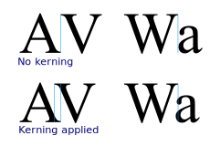
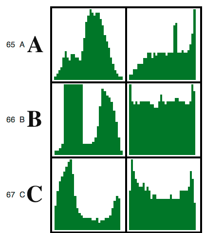

by Dean Marano
Why is OCR so hard?
Advances in HTML now allow pixel level access to images, allowing image processing to be done in the browser.
The browser allows for a standard, license free environment that anyone can use an access on a variety of devices.
HTML5 DemoQuestion: Can we use whitespace segmentation again?
Answer: Sometimes...
For each character we wish to identify, we draw it to the screen and create two histograms. We use the same segmentation to narrow the whitespace around the character as much as possible before taking the histogram.
